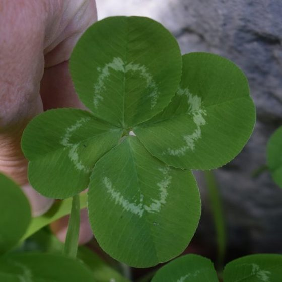
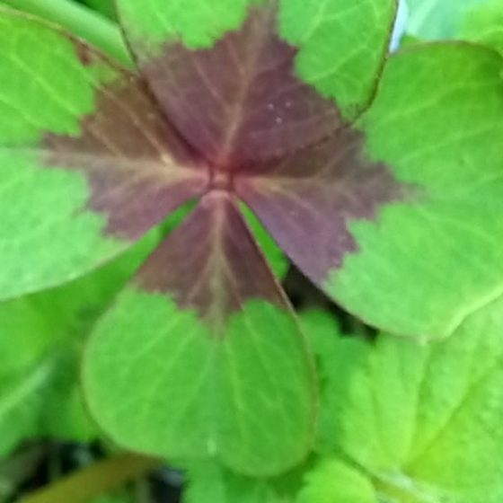

L'appli en images


Les enfants partent à la chasse au trèfle à quatre feuilles dans leur jardin. L'appareil photo les aide à le trouver, et chaque trouvaille rejoint leur collection.
Bientôt sur Google PlayDevenir testeurL'enfant explore l'herbe, le téléphone l'aide à repérer le trèfle magique. Un cadre doré s'allume quand il en voit un.
L'enfant compte lui-même les feuilles : 3 ou 4 ? Il apprend à regarder de près.
Chaque trèfle trouvé rejoint sa collection, et la mascotte Trèflou grandit avec elle. Un tuto explique comment faire sécher le vrai trèfle.
Beaucoup de plantes ressemblent au trèfle. Le guide de l'appli apprend aux enfants à les reconnaître.

Folioles arrondies, avec souvent un « V » blanchâtre dessiné sur chacune. C'est le trèfle blanc des pelouses.

Folioles en forme de cœur. Vendue en pot comme « trèfle à 4 feuilles », ce n'est pas un trèfle !
Photos : Anne Parsons, Mal Bennett (iNaturalist, CC0).
L'appli utilise deux réseaux de neurones conçus pour cette chasse, qui tournent entièrement sur le téléphone : aucune photo n'est envoyée, et tout fonctionne sans réseau.
Il parcourt l'image de la caméra à trois zooms différents et repère, en une vingtaine de millisecondes, tout ce qui pourrait être un trèfle à 4 feuilles. Il peut en trouver plusieurs à la fois.
Chaque candidat est examiné en haute résolution : forme des folioles, marque blanche en « V », nombre de feuilles. Il a appris d'un grand modèle de vision (DINOv2) avant d'être réduit pour le téléphone. Il ne lui faut que 2 ms par trèfle.
Le dernier mot lui revient : il compte lui-même les feuilles avant de ranger le trèfle dans sa collection. Si l'appli doute, elle affiche « ❓ À vérifier » au lieu de faire la fête.
Un détecteur seul ferait clignoter les cadres plusieurs fois par seconde. L'appli suit donc chaque trèfle d'une image à l'autre, comme un pisteur :
Mesurés sur des dizaines de milliers de photos qu'il n'a jamais vues pendant son apprentissage :
Données d'entraînement libres (licences CC0 / CC BY : iNaturalist, Roboflow Universe, Open Images, Openverse, Wikimedia Commons) et modèles open source (Apache 2.0). Les auteurs sont cités dans l'appli.
Enfant, je passais des heures à chercher des trèfles à quatre feuilles dans le jardin. Aujourd'hui je travaille dans l'intelligence artificielle, et j'ai voulu mettre cette technologie au service de cette même magie : une détection en temps réel, directement sur le téléphone, pour donner aux enfants l'envie de sortir. — Jason
Android 8 ou plus récent. Pas encore sur iPhone.
Non. La chasse fonctionne sans réseau, au fond du jardin comme en vacances. Seul l'achat passe par le Play Store.
Surtout de 4 à 10 ans, avec ou sans un adulte.
L'appli utilise la synthèse vocale du téléphone. L'Espace parents indique si une voix doit être installée.
Ça peut arriver, surtout de loin. C'est pour ça que l'enfant compte toujours les feuilles lui-même avant de ranger un trèfle dans sa collection.
Contact : contact.petitjardinstudio@gmail.com
L'appli est en test avant sa sortie sur Google Play. Vous avez un téléphone Android et un peu de pelouse ? C'est gratuit et ça prend 2 minutes : 1) rejoignez le groupe des testeurs avec votre compte Gmail, 2) sur votre téléphone, ouvrez le lien « Devenir testeur » et installez l'appli. Gardez-la 14 jours et faites quelques chasses !
1. Rejoindre le groupe 2. Devenir testeur